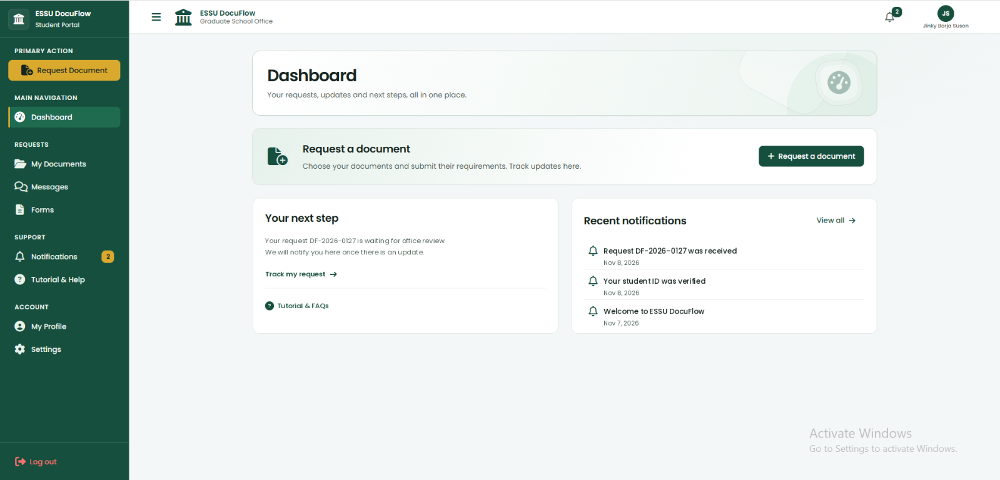
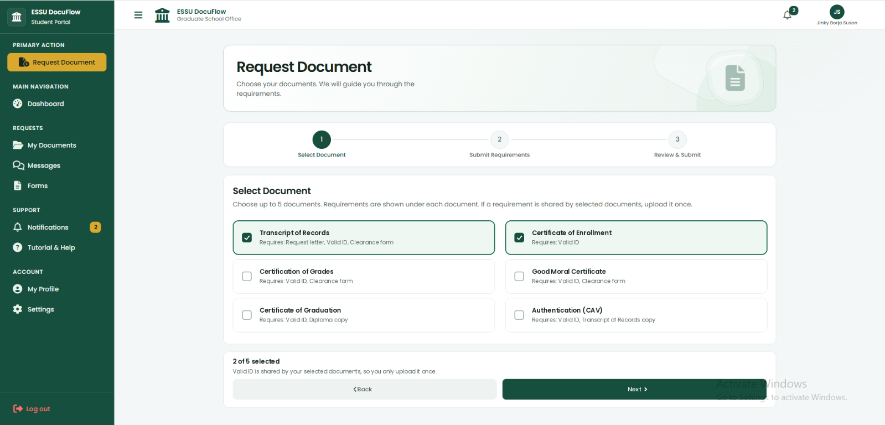
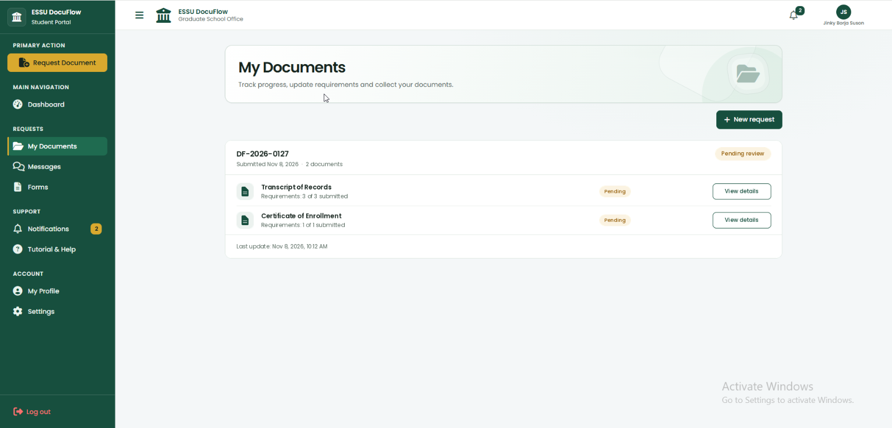
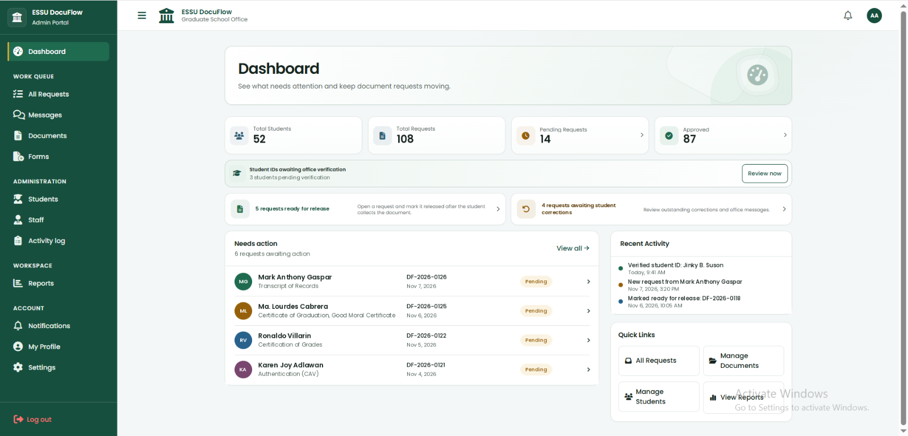
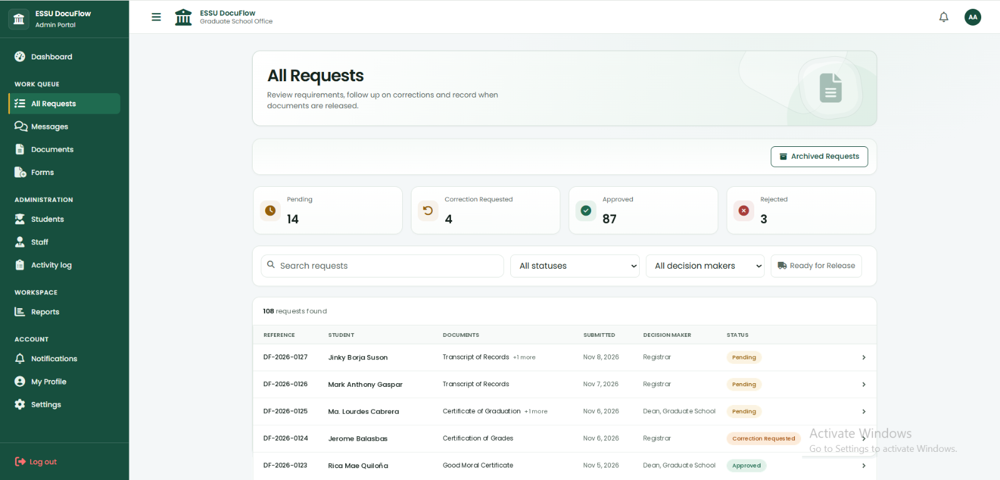
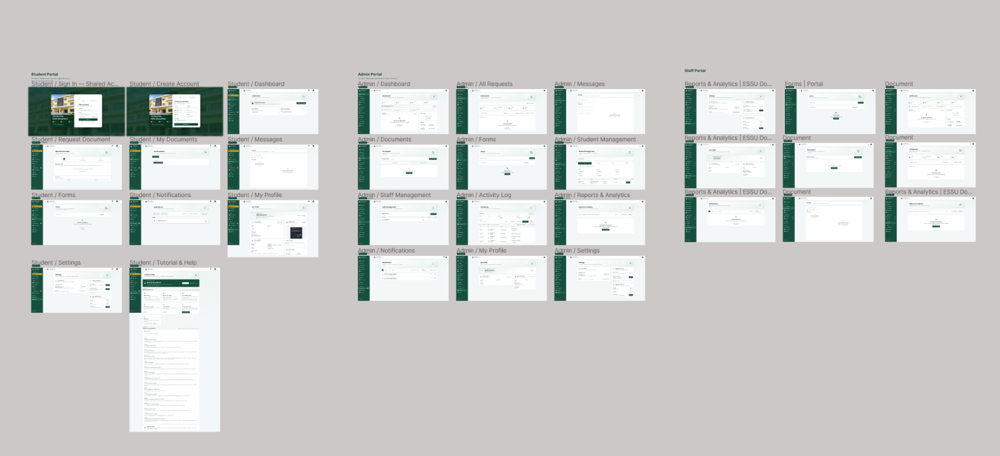

CASE STUDY / UI-UX DESIGN
ESSU DocuFlow
A graduate student document request portal designed to make requesting and tracking university documents clearer.

Problem & Project Context
I designed DocuFlow around graduate students’ requests for official documents from the Graduate School. I brought request requirements, progress, and next steps into the student request experience.
Project Objectives & Target Users
I designed DocuFlow for Eastern Samar State University Graduate School students who request documents and the staff who receive and process them. I organized the experience across the Student, Admin, and Staff portals.
My Role
I worked as the UI/UX Designer and Frontend Developer, designing and developing responsive interfaces for the Student, Admin, and Staff portals. I designed dashboards, document request forms, request tracking, messaging, and document management pages, using consistent components and frontend functionality.
Design Process & Information Architecture
I mapped the student request flow from account access and document selection through request details, review, submission, and tracking to guide the final interfaces.
Interface Patterns
I brought request details together in a scannable review table and used a visible step indicator to clarify progress. I paired the tracking timeline with request details so students can see status and context together.
Final UI
I designed student-facing request and tracking screens alongside administrative interfaces for the Graduate School Office. I show the Student, Admin, and Staff portal screens below.
Student Portal



Admin Portal



Screens shown with sample data.
System Design Overview
I designed three portals for students, administrators, and staff around a shared system of navigation, cards, and status patterns.

Student Portal · Admin Portal · Staff Portal
I used this Figma overview to bring the portal screens together.
Tech Stack & Deployment
Frontend: SvelteKit, Svelte, HTML, CSS, JavaScript
Backend: Node.js
Database: MySQL
Hosting: Vercel
Explore the live ESSU DocuFlow demo .